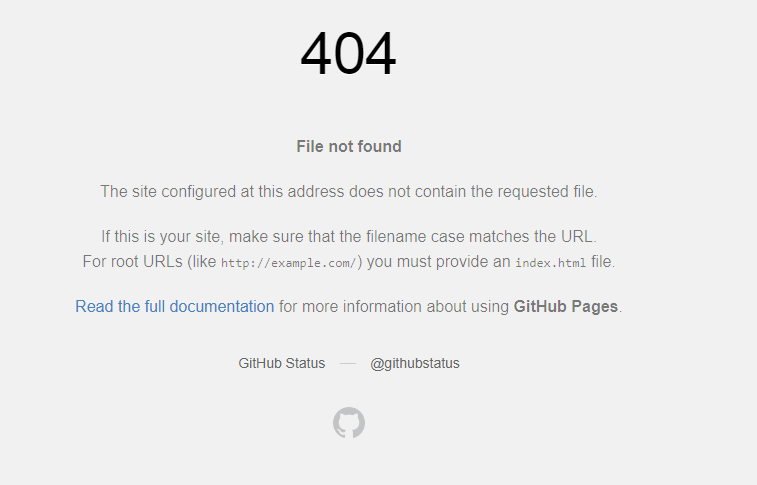

Move your mouse over me!
Before I started this project I had no knowlegde about HTML coding, so I started off by watching this youtube video
While I watched the video I was following his tips, trying to do the same things as the instructor did. The first step I took was downloading Bracket, to write my code in.

Only now could I begin making the website. I made a few files to start of, for the front page, one for an about me page, and than another file for the page I will upload my projects. I wanted to have a top navigation bar, so that was the first thing I did. The first few lines of codes in every page is therefore the same, to keep the navigation bar in tact. I found a good tutorial on how to do a nice top navigation bar, click here to visit the website.
I decided to use the Github desktop app to publish my website, because I heard about some troubles concerning gitbash from a friend of mine. The first step was therefor to downloaded the app, and make a Repository name. The next step was to upload my files to github. The exact steps will be covered in detail later. 
I encountered the error showed on the image above, but there was an easy solution to it. Non of my html files were named index.html, so when I changed that, everything worked as expected. However after I changed a file name to index.html everything worked fine, so I assume that is a solution to that problem.
The steps I used to upload my website are listed here beneath. I got this list from another student, Hrannar Þórarinsson, so I could easily follow them.
Steps to upload the website through Github desktop app
- Create repository on the Github on the website (make sure that it is public).
- Clone the repository on Github Desktop.
- Transfer Brackets files into the repository on your desktop that mirrors the one you created on the website.
- Commit to master.
- Push Origin.
- On the Github website go to your repository.
- Go to settings. Scroll down till you see Github Pages. Select Brancch as master and file as /(root).
- Press save.
- You should now have a link to your working website.
I wanted to make the page about myself brief and simple, which explaines the simplicity of it. I just wanted to add the biggest factors in my proffesional and academic careers, instead of adding my whole Curriculum Vitae(CV).